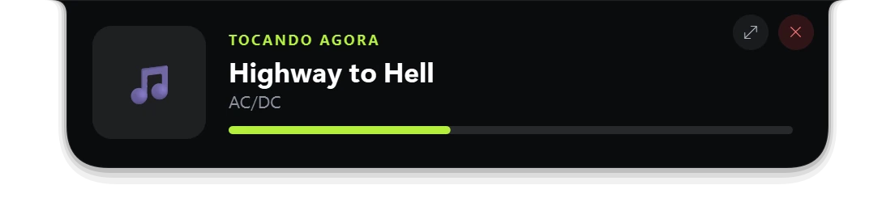
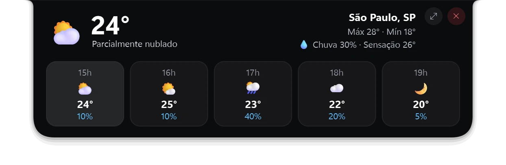
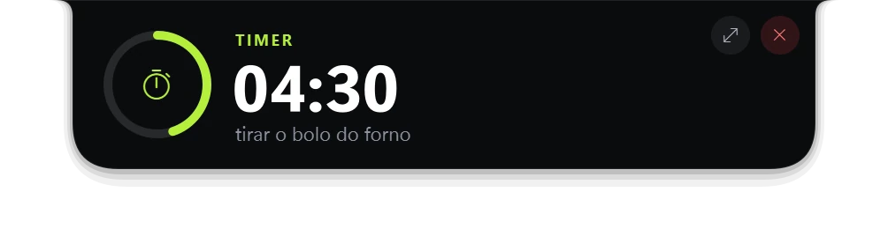
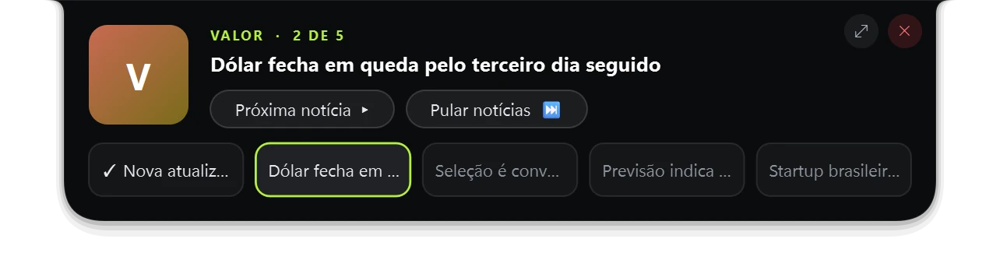
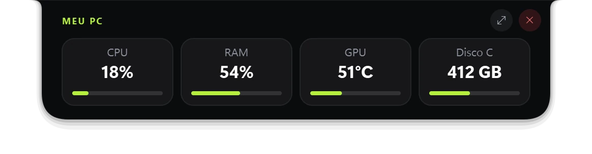

WhatsApp e DiscordMensagens que ela escreve por você
“Meu PC travou, avisa o Gustavo que não vou jogar.” Ela entende, reescreve e manda: “O Lucas pediu pra avisar que o PC dele travou e ele não vai conseguir jogar agora.” Errou? Ela oferece a correção.
🎵
Música
Toca no Spotify ou YouTube, pausa, pula e mostra o que está tocando com a capa.

⛅
Clima por hora
Agora e as próximas horas, com chance de chuva, onde você estiver.

⏱️
Lembretes e timers
“Me lembra da reunião amanhã às 2.” Ela pergunta quanto tempo antes quer o aviso.

📰
Notícias do dia
Lê as manchetes uma a uma, como um telejornal, e mostra o resumo.

🎮
Feita pra quem joga
Build e itens do LoL pelo OP.GG, contra qual campeão, e modo jogo que não tira FPS.
👁️
Vê a sua tela
“O que você acha dessa arte?” Ela olha a tela e responde de verdade.
🚀
Deixa o PC rápido
Desempenho máximo, libera memória, limpa temporários e diz o que está pesando.

📂
Abre tudo
Programas, jogos, sites e pastas em qualquer disco: “abre a pasta dos clientes no disco D”.